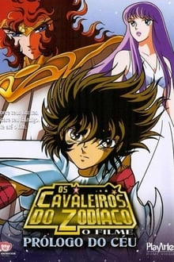

Versailles
“Uzumaki Naruto quer ser o melhor ninja de todos. Ele está indo muito bem, mas com o perigo iminente imposto pela misteriosa Akatsuki, Naruto percebe que ele deve treinar mais que nunca e deixa sua Vila para um intenso treinamento que o pressiona contra seus limite.
